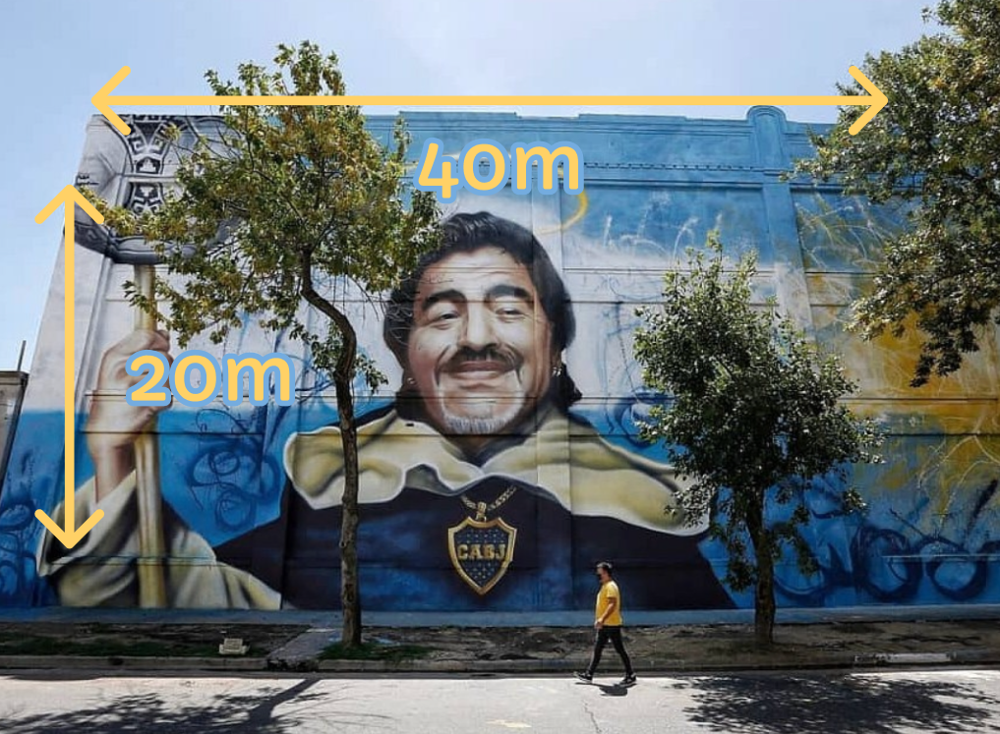

Street Art
San Diego Del Bario De La Boca
Alfredo Segatori
2020
Alfredo Segatori
Artiste Peintre
Alfredo Segatori, né en 1970 à Buenos Aires, est un artiste argentin pionnier du street art. Autodidacte, il réalise depuis la fin des années 1980 d’immenses fresques colorées mêlant art urbain et peinture gestuelle. On lui doit notamment « El regreso de Quinquela », l’une des plus grandes peintures murales du monde. Son travail, souvent réalisé à main levée, transforme les espaces industriels et urbains en véritables œuvres d’art.
Quelques unes de ses œuvres
Le Street Art
Le street art est un mouvement artistique né dans les années 1970, principalement dans les rues de New York. Il regroupe diverses formes d’art urbain comme le graffiti, les pochoirs, les collages ou les installations. Souvent éphémère, il s’exprime dans l’espace public, en dehors des galeries. Le street art cherche à interpeller, provoquer ou embellir l’environnement urbain. C’est un art libre, populaire et accessible à tous.
Dimensions :
Lieux :
Technique
Pour San Diego del Barrio, Alfredo Segatori utilise surtout la bombe aérosol à main levée, sans dessin préalable. Il travaille sur de grands murs préparés, souvent à l’aide d’une nacelle. Son style mêle portrait réaliste et éclats de couleur gestuels, inspirés de l’« action painting ». La palette bleu et blanche rend hommage à l’Argentine et à Maradona. Le résultat est une fresque monumentale, expressive et profondément populaire.
Description
San Diego del Barrio est une immense fresque rendant hommage à Diego Maradona, représenté comme une figure quasi spirituelle, protectrice du quartier de La Boca. Segatori y mêle réalisme et symbolisme, avec des couleurs vives et une énergie gestuelle propre à son style. L’artiste cherche à célébrer la culture populaire argentine, à honorer la mémoire de Maradona et à transformer l’espace urbain en lieu de rencontre et d’identité collective. Son œuvre traduit à la fois admiration, nostalgie et fierté nationale.